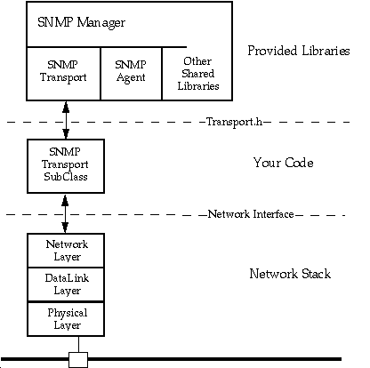
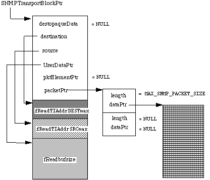
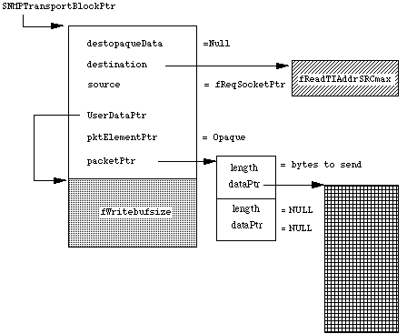

|
|
This Technical Note explains how to write an SNMP (Simple Network Management
Protocol) Transport. An SNMP Transport is responsible for communicating between
the SNMP Manager and a particular network layer. Thus, if you were writing a
new network stack for the Macintosh and wanted it to use the SNMP Manager, you
would write an SNMP Transport for your network stack.
[Jun 01 1993]
|
Introduction
It is assumed in this document that you understand MacSNMP, object-oriented
programming and the Shared Library Manager. The SNMP Manager is built using the
Shared Library Manager and is a set of shared libraries. The SNMP Manager
shared library contains the implementation of the base class for an SNMP
Transport. Your transport must be a subclass of this SNMP Transport class. For
more information on MacSNMP and the Shared Library Manager see the E.T.O. CD
ROM.
This Technote provides some additional information needed to construct an SNMP
Transport for a particular network stack. An SNMP Transport is required to know
about all of the specific idiosyncrasies of SNMP for a particular network
stack. SNMP was originally defined to run over the TCP stack using UDP. The
IETF (Internet Engineering Task Force) has also defined how to run SNMP over
three other network stacks: AppleTalk, IPX, and OSI. These methods are
documented by the IETF proposed standards: RFC 1419--SNMP over AppleTalk, RFC
1420--SNMP over IPX, and RFC 1418--SNMP over OSI. There is also an
informational RFC draft that describes what must be defined to allow SNMP to
run over any particular network stack.
Apple provides SNMP transports that support the TCP stack and the AppleTalk
stack. The TCP SNMP Transport provides knowledge of IP addresses, listens on
the well-known SNMP sockets, sends SNMP packets on UDP, and resolves addresses
in dotted notation into IP addresses for sending Traps. (An SNMP
Trap is the method that SNMP entities use to send unsolicited warning
messages to each other and should not be confused with a Macintosh Operating
System Trap.) The AppleTalk SNMP Transport likewise provides knowledge of
AppleTalk addresses, listens on the well-known SNMP sockets, sends SNMP packets
on DDP, and resolves NBP (Name Binding Protocol) names into AppleTalk addresses
for sending Traps. Similarly, a new SNMP Transport would have to
provide these same services: understanding the new network addresses, listening
for SNMP packets, sending SNMP packets, and resolving stored console addresses
to network addresses for sending Traps.
Back to top
SNMP Transports

Figure 1. An SNMP Transport provides the interface between the SNMP Manager
and a particular network stack.
Creating an SNMP Transport
The file Transport.h defines the SNMP Transport class. To create an SNMP
Transport, you must subclass the SNMP Transport class. The Shared Library
Manager allows a run-time link of your SNMP Transport subclass with the base
object SNMP Transport provided in the SNMP Manager shared library. The
definition of the SNMP Transport object is as follows:
/**********************************************************************
** Class TSNMPTransport
***********************************************************************/
#define kTSNMPTransportID "snmp:mgr$TSNMPTrans"
#define kLIB_TransID "snmp:trans$" // Library ID for an SNMP Transport
class TSNMPTransport : public TDynamic
{
public:
TSNMPTransport();
virtual ~TSNMPTransport();
virtual Boolean IsValid() const; // returns valid or not
virtual OSErr InitSNMPTransport(
TransportTag aTag,
TIAddressPtr aTrapSocketPtr,
TIAddressPtr aReqSocketPtr,
Boolean ahandlesresolution,
short aWritebufsize,
TransportRWProcPtr aWriteProcPtr,
short aNumofReads,
short aReadTIAddrSRCmax,
short aReadTIAddrDESTmax,
short aReadbufsize,
TransportRWProcPtr aReadProcPtr);
virtual void SNMPWriteDone(SNMPTransportBlockPtr snmpPtr);
virtual void SNMPReadDone(SNMPTransportBlockPtr snmpPtr);
TSNMPManagerPrv* fSNMPManagerPtr;
friend TSNMPManagerPrv;
protected:
Boolean fValid;
Boolean fhandlesresolution;
short fNumofReads;
short fReadTIAddrSRCmax;
short fReadTIAddrDESTmax;
short fReadbufsize;
short fWritebufsize;
private:
TransportTag fTag;
TIAddressPtr fTrapSocketPtr;
TIAddressPtr fReqSocketPtr;
TransportRWProcPtr fWriteProcPtr;
TransportRWProcPtr fReadProcPtr;
|
To start an SNMP Transport you must instantiate it. For the AppleTalk SNMP
Transport, we install a process on the AppleTalk transition queue that tells us
when AppleTalk is coming up or going down and instantiate or destroy the
Transport as appropriate. For the TCP SNMP Transport, an INIT31 instantiates
the Transport and it is never destroyed. For your Transport you must provide
the code that instantiates and destroys your Transport.
When a Transport is instantiated the base class constructor is called first.
The base class constructor fills in the fSNMPManagerPtr field with a
pointer to a class TSNMPManagerPrv, which can be cast to a pointer to
the class TSNMPManager defined in TSNMP.h. This pointer can be used to
access the members of the TSNMPManager class. The constructor also
adds a pointer to your SNMP Transport object to a queue of transports so that
it can find you later, and if everything worked, sets the fValid field
to true. Your constructor is then called. If the fValid field is not
set to true on the entrance to your constructor, you should bail out of the
constructor immediately. If your constructor fails for some reason, you should
set the fValid field to false. The Shared Library Manager will then
clean up the object so that a partially constructed one does not remain.
Initializing an SNMP Transport
After your Transport is constructed it must be initialized. Your transport will
not work until InitSNMPTransport() is called. This routine sets all of
the fields in the SNMP Transport from the parameter values that you pass in.
You must call the inherited InitSNMPTransport member function if you
override it. The following fields must be set.
-> TransportTag aTag
A long that uniquely identifies a transport (analogous to OSType)
-> TIAddressPtr aTrapSocketPtr
Opaque address of where the Transport listens for Traps
-> TIAddressPtr aReqSocketPtr
Opaque address of where the Transport listens for Requests
-> Boolean ahandlesresolution
True if the transport can send Traps
-> short aWritebufsize
Maximum size of write buffers
-> TransportRWProcPtr aWriteProcPtr
Address of the write procedure
-> short aNumofReads
Maximum number of reads issued at once
-> short aReadTIAddrSRCmax
Maximum length of source address for read operations
-> short aReadTIAddrDESTmax
Maximum length of destination address for read operations
-> short aReadbufsize
Maximum size of a read buffer
-> TransportRWProcPtr aReadProcPtr
|
It is recommended that the TransportTag be four human readable ASCII
characters that describe the network layer that the Transport talks to. If
multiple Transports with the same TransportTag are instantiated, the
SNMP Manager will ignore all but the first one instantiated. For the AppleTalk
SNMP Transport the tag is 'DDP ', for the TCP SNMP Transport the tag
is 'UDP '. This value is used in the Trap Table in the
Macintosh Agent to determine which Transport understands the console address
stored in a particular row of the table. The sockets are where the Transport
listens for Traps and Requests. The SNMP Manager does not
understand the format of these addresses and just passes them along to your
Transport. They are also used as the source of Traps or
Responses sent. Finally, they allow the SNMP Manager to determine what
type of packet it is decoding before parsing the raw ASN.1 data. In our
Transports we have stored pointers to the actual bits of the network layer
addresses in these fields. The aWritebufsize and aReadbufsize
are the size of buffers that the SNMP Manager allocates for your Transport to
use.
Reading SNMP Packets
Finally, InitSNMPTransport() tries to issue aNumofReads
outstanding reads by calling your aReadProc() with a filled in
SNMPTransportBlock as shown in Figure 2. The SNMPTransportBlock is
defined as follows:
struct SNMPTransportBlock {
unsigned long qLink; // reserved for pointer to next block
short qType; // reserved for queue routines
TSNMPTransport* transport; // who was asked to read or write block
SNMPError result; // after request is serviced
void* destopaqueData;// destination address to be resolved
// (used in write trap only)
TIAddressPtr destination; // who the packet was sent to
TIAddressPtr source; // who sent the packet to us
void * UserDataPtr; // Transport work space
Boolean freeFlag; // is the write finished?
Boolean readFlag; // managed by SNMP Manager
PacketElementPtr pktelementPtr;// managed by SNMP Manager
SNMPPacketStructPtr packetPtr; // managed by SNMP Manager
|
The aReadProc() must be able to catch both incoming Traps and
Requests. It must also be able to be called at any time, thus
you must not allocate memory using the normal Macintosh memory calls. You may
use the area pointed to by UserDataPtr for any scratch you might need.
The SNMP Manager has preallocated this area for you according to the sizes you
set in aReadbufsize. It must also return immediately. When a read
actually completes you must call SNMPReadDone() after filling in the
data, the source and destination addresses, the actual number of bytes read (in
packetPtr->packetPiece.dataSize), the freeFlag (set to
false), and the result (snmpNoError if it worked.)
|
Warning:
If the freeFlag is incorrectly set, the SNMP Manager
will become hopelessly confused.
|
After the read packet is processed by the SNMP Manager it issues another read
call to aReadProc() so that there will always be some number of
outstanding reads. If there are no outstanding reads at any time it is
allowable for your transport to drop SNMP packets.

Figure 2. Layout of SNMPTransportBlock when aReadProc() called. Only the
fields that the Transport may need to access are shown.
When your Transport is deleted you must ensure that your completion routines
will not be called after your destructor is finished and your Transport object
is gone. You may have to wait for asynchronous writes to complete and cancel
any outstanding reads. The base class destructor will ensure that any packets
you have queued up for processing will be thrown away.

Figure 3. Layout of SNMPTransportBlock when the SNMP Manager calls
aWriteProc() with a response to an SNMP Request. *
* Only the fields that the Transport may need to access are shown.
Writing SNMP Packets
After a packet is processed by the SNMP Manager, it will almost always generate
a Response packet. The SNMP Manager will either respond to a
Request or generate a Trap. In the cases of a simple
Response the SNMP Manager will call your aWriteProc() with an
SNMPTransportBlock filled out as shown in Figure 3. Your
aWriteProc() may be called at any time, thus you must not
allocate memory using the normal Macintosh memory calls. You may use the area
pointed to by UserDatPtr for any scratch memory you need. The SNMP
Manager has preallocated this area for you according to the sizes you set in
aWritebufsize. The destination socket is the same block as was passed
in on the read as the source socket, the source socket is your initialized
fRequestSocketPtr, the packetPtr points to the SNMP data to
put on the wire. You must return immediately from the call to
aWriteProc(). After the write completes you should fill in the
result, set the freeFlag to true, and call
SNMPWriteDone() so that the SNMP Manager can free up the memory it
allocated.
|
Warning:
If the freeFlag is incorrectly set the SNMP Manager
will become hopelessly confused.
|
If your Transport can send Traps it must set the
fHandlesResolution field to true. It is strongly encouraged that your
transport handle Traps, if it did not, it would not be fully compliant
with the SNMP standard. When a Trap is generated, the SNMP Manager
will determine if the Trap is supposed to be sent to a console that
supports your Transport type by looking through the Trap table in the
Macintosh System MIB implemented by the Macintosh Agent. If so, it will issue a
call to your aWriteProc() as above, except that the
destOpaqueData will point to a block that the SNMP Manager has
procured from the trapDestination field in the Trap Table in
the Macintosh Agent. It is up to you to define how this address will be stored.
However, it must be nonvolatile between reboots of the system. For the
AppleTalk SNMP transport, we store the NBP name of the console as specified in
the AppleTalk over SNMP RFC. For the TCP SNMP Transport, we store the IP
address of the console in dotted notation The Transport is responsible for
turning this address into the wire address of the console. Everything else is
as above. You must return immediately after the call to your
aWriteProc() and call SNMPWriteDone() when the Trap
write completes.
The Trap Table is implemented by the Macintosh Agent and is defined in
ASN.1 by the Macintosh System MIB as:
TrapRequestEntry ::= SEQUENCE {
trapIndex INTEGER, // unsigned long
trapCommunity MacintoshDisplayString, // opaque data
trapProtocol MacOSType, // four bytes
trapDestination OCTET STRING, // opaque data
trapValidity INTEGER // 1 = valid, 2 = invalid
|
The two fields that an SNMP Transport author must define are the
trapProtocol and the trapDestination. The
trapProtocol is compared by the SNMP Manager to the
TransportTag and is used to identify which SNMP Transport will be able
to resolve the trapDestination entry and send the Trap. The
trapProtocol field must contain the same value that was initialized in
the transportTag field. Some care should be given to the format of the
trapDestination as network managers will have to enter these addresses
by hand from a console.
Back to top
Summary
An SNMP Transport provides an interface between the SNMP Manager and a network
layer of a particular network stack. It must be able to be called at any time,
thus cannot depend on the Macintosh memory calls. A Transport must understand
how a Trap destination (console address) is to be stored in the
Macintosh Agent's Trap Table. This address format must be stable between
reboots of the system and must be resolvable into a network address for the
console. It is the responsibility of the Transport developer to inform network
managers of how to store this address. For IPX, AppleTalk, and OSI, these
standards have been specified in RFCs (Request For Comments). These documents
are available on-line off of the Internet and are maintained in various
repositories and formats by the IETF.
Back to top
References
MacSNMP Programmer's Guide
Shared Library Manager Programmer's Guide
RFC 1157, A Simple Network Management Protocol (SNMP)
RFC 1155, Structure and Identification of Management Information for
TCP/IP-based Internets
RFC 1419, SNMP over AppleTalk, Internet Proposed Standard
Macintosh System MIB
Back to top
Downloadables
|

|
Acrobat version of this Note (312K)
|
Download
|
Back to top
|